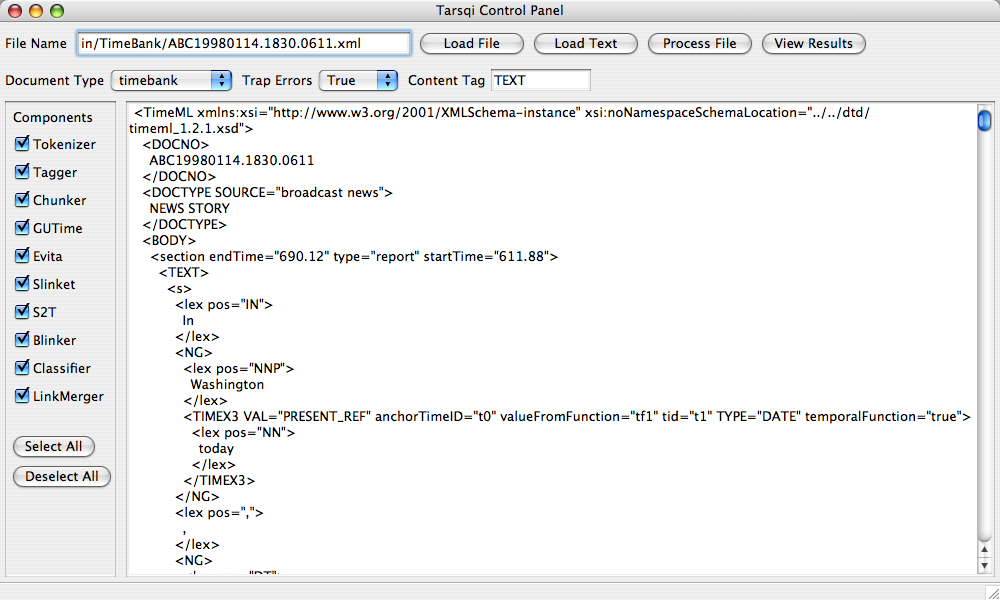
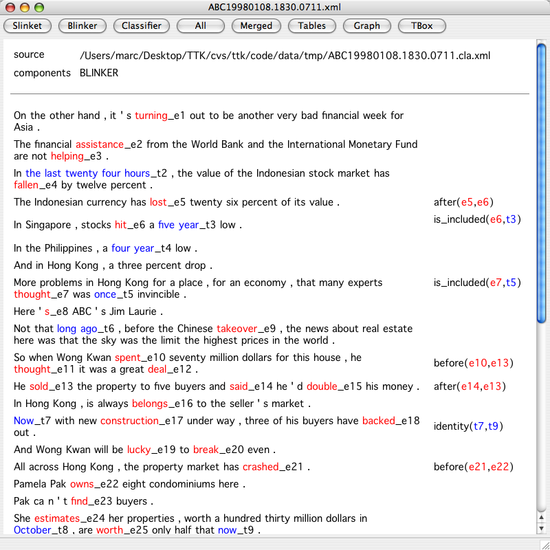
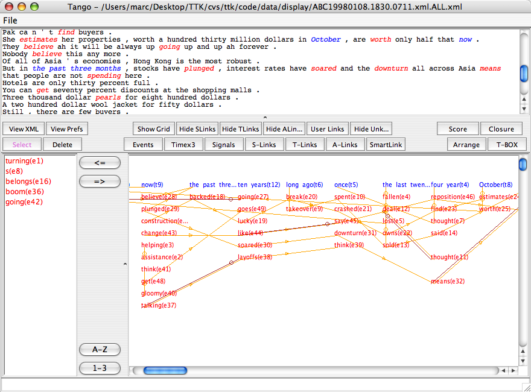
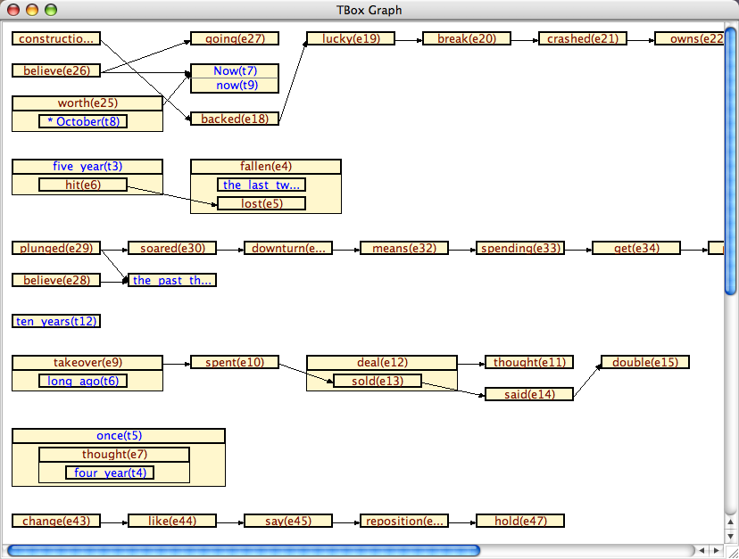

Screenshots
Tarsqi Toolkit Screenshots
This page show various screenshots made while processing a TimeBank document.
1. The Toolkit graphical user interface after opening a document and selecting the document type.

2. After processing the document.

3. The results view.

4. Opening Tango on the processed file.

5. Tango's TBOX representation of the same document.
